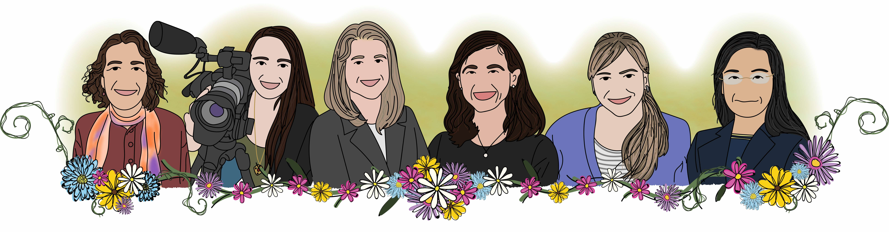

About the authors

This book was created by (pictured above left to right)
Donna LaLonde
Director of Strategic Initiatives and Outreach
American Statistical Association (ASA)
Jessica Crowell
Videographer/Editor (Multimedia Technician)
Department of Biostatistics, Johns Hopkins Bloomberg School of Public Health
Staff, JHU Data Science Lab (DaSL)
Stephanie Hicks
Associate Professor
Department of Biostatistics, Johns Hopkins Bloomberg School of Public Health
Faculty member, JHU Data Science Lab (DaSL)
Faculty member, Malone Center for Engineering in Healthcare
stephaniehicks.com
Lucy D’Agostino McGowan
Assistant Professor
Department of Statistical Sciences, Wake Forest University
lucymcgowan.com
Mine Çetinkaya-Rundel
Professor of the Practice
Department of Statistical Science, Duke University
Developer Educator, Posit
mine-cr.com
Mingfei Qiu
Senior Quantitative Risk Management Analyst
Federal Home Loan Bank of Atlanta
Acknowledgements
We would also like to thank
- The Women in Statistics and Data Science (WSDS) Conference 2018
- The Department of Biostatistics at Johns Hopkins Bloomberg School of Public health
- All the members of the Johns Hopkins Data Science Lab
- Roger Peng
- Brian Caffo
- Erin Wiley
- The American Statistical Association